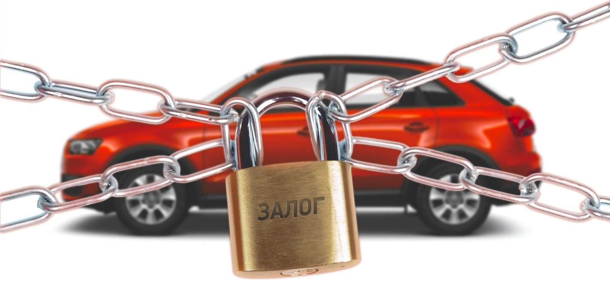

С 15-го октября 2013 года купить и оформить автомобиль с рук стало проще. Граждане могут свободно продавать автомобиль, не снимая его с учета. Гос. номер авто, при желании нового владельца, сохраняется, а также поставить машину на учет можно в любом регионе страны. Это, несомненно, очень удобно и экономит силы и время. Однако нововведения никак не обезопасили владельцев авто от мошеннических действий, число которых еще несколько лет назад, с распространением автокредитов росло в геометрической прогрессии.
Схема, по которой действовали преступники, была проста: на третьих лиц брался автокредит (чаще всего, этим подставным людям платили копейки за «работу»), затем машина, находящаяся в залоге, фиктивно перепродавалась несколько раз. А дальше автомобиль реально продавался обычному человеку, которому эта машина приглянулась, и который понятия не имел о ее истории. И именно ему, добросовестному покупателю через какое-то время банк сообщал, что машина находится в залоге. Выхода два: либо выплачивать банку чужой кредит, либо машину заберут в счет долга.
Еще несколько лет назад число подобных преступлений было огромным. Пострадавшие от действий мошенников добросовестные покупатели судились, писали письма в различные инстанции, пытались найти предыдущих хозяев машины, но все эти меры не приносили ощутимого результата. Пока не начал работать Реестр уведомлений о залогах движимого имущества.
От приобретения заложенного автомобиля покупателя убережет проверка машины через этот реестр, который был создан Федеральной нотариальной палатой в соответствии с Федеральным законом № 379.
Сейчас в нем уже зарегистрированы миллионы уведомлений. И это крупнейшая база объектов имущества, на которых «висят» долги. Вбив в реестре VIN автомобиля, вы сможете увидеть информацию о том, в залоге автомобиль или нет. И даже если по каким-то причинам сведений о залоге автомобиля, на самом деле купленного в кредит, там не оказалось (например, банк не предоставил их либо предоставил с опозданием), не беда. Согласно закону, если на момент приобретения покупатель не мог найти в реестре сведений о том, что имущество (автомобиль) были заложены, то он освобождается от обязательств — убытки понесет банк, который не внес в реестр сведения вовремя. Чтобы иметь «железные» доказательства, не потерять машину и не выплачивать чужие долги, в случае, если авто все-таки окажется в залоге у банка, нужно просто зайти к любому нотариусу, который выдаст выписку из реестра на конкретную дату и время о том, что такой-то автомобиль не находится в залоге. Тогда, даже если возникнет спорная ситуация, банк уже не сможет обязать вас платить чужой кредит. И машина тоже останется вашей. Услуга эта недорога — 40 рублей за каждую страницу выписки, плюс техническая работа, то есть сумма составит около 200-300 рублей.
Если все документы проверены, нотариальная выписка из реестра на руках и машина в порядке, можно переходить к заключению сделки. Она включает в себя два этапа. Сначала заполняется бланк о купле-продаже транспортного средства, а затем машина проходит процедуру переоформления на нового владельца (не снимая с учета).
Вот вы и владелец своего нового авто. Теперь в течение 10-ти дней вы должны зарегистрировать автомобиль на свое имя. Помните, что машина продается с гос. номером, и выдача «транзитов» не осуществляется.
Снятие автомобиля с учета, все же, осуществляется в случаях, если:
- автомобиль продадут за границу;
- автомобиль сдается на утилизацию.
Чтобы переоформить авто, понадобится два набора документов — со стороны нынешнего и будущего владельцев. От продавца будут нужны:
- ПТС;
- свидетельство о регистрации транспортного средства;
- паспорт гражданина.
От покупателя:
- паспорт гражданина;
- полис ОСАГО.